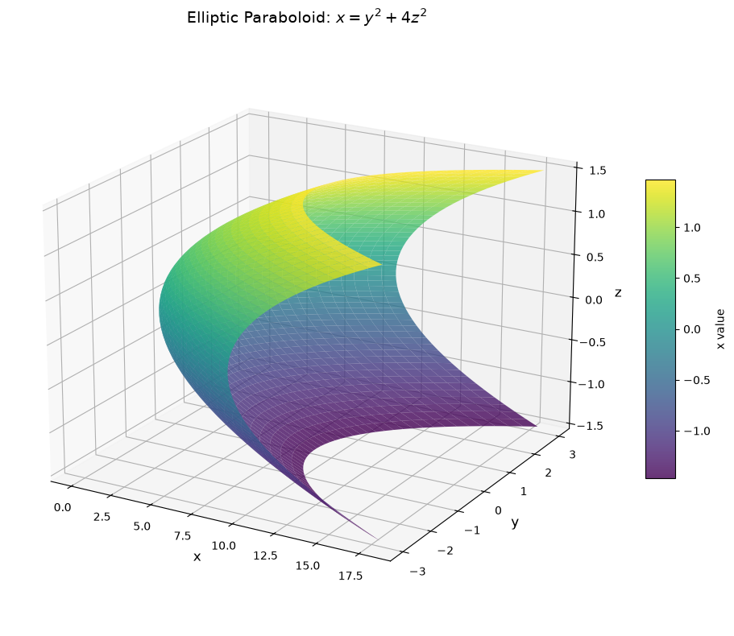
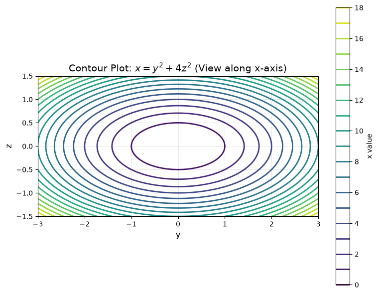
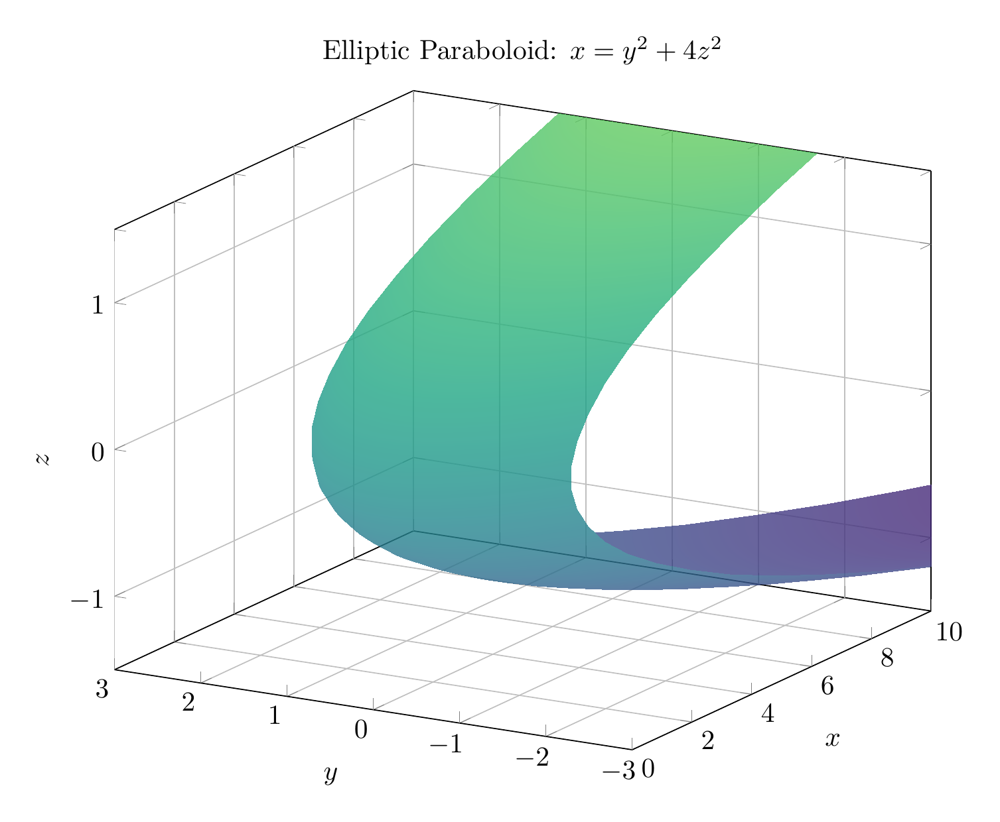
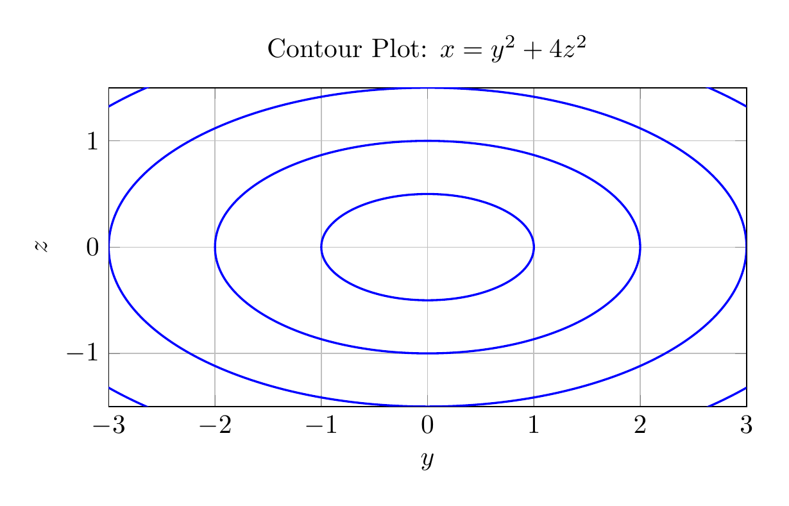

Path: mcma-Qwen3.5-397B-A17B/calculus-12.6.11/chat_20260825_141651_750301_utc_0800
Problem
Please solve the math problem in the image.

End of problem
Answer
# Solution: Identifying the Surface $x = y^2 + 4z^2$
## Step 1: Analyze the Equation
The given equation is:
$$x = y^2 + 4z^2$$
This is a quadratic equation in three variables. To identify the surface, we'll examine its traces (cross-sections) in different planes.
## Step 2: Examine Traces
### Trace in planes $x = k$ (constant):
Setting $x = k$ where $k > 0$:
$$k = y^2 + 4z^2$$
This is the equation of an **ellipse** in the $yz$-plane with:
- Semi-axis in $y$-direction: $\sqrt{k}$
- Semi-axis in $z$-direction: $\frac{\sqrt{k}}{2}$
As $k$ increases, the ellipses get larger. When $k = 0$, we get a single point at the origin. When $k < 0$, there are no real solutions.
### Trace in planes $y = k$ (constant):
Setting $y = k$:
$$x = k^2 + 4z^2$$
This is a **parabola** in the $xz$-plane opening in the positive $x$-direction with vertex at $(k^2, k, 0)$.
### Trace in planes $z = k$ (constant):
Setting $z = k$:
$$x = y^2 + 4k^2$$
This is a **parabola** in the $xy$-plane opening in the positive $x$-direction with vertex at $(4k^2, 0, k)$.
## Step 3: Identify the Surface
The equation $x = y^2 + 4z^2$ has the standard form of an **elliptic paraboloid**:
$$x = Ay^2 + Bz^2$$
where $A = 1 > 0$ and $B = 4 > 0$.
**Key characteristics:**
- The surface opens along the **positive $x$-axis**
- Cross-sections perpendicular to the $x$-axis are **ellipses**
- Cross-sections parallel to the $xy$-plane and $xz$-plane are **parabolas**
- The vertex is at the **origin** $(0, 0, 0)$
## Conclusion
The surface $x = y^2 + 4z^2$ is an **elliptic paraboloid** opening in the positive $x$-direction.
The elliptical cross-sections become wider as $x$ increases, and the surface extends infinitely in the positive $x$-direction. The factor of 4 in front of $z^2$ means the ellipses are stretched more in the $y$-direction than in the $z$-direction (specifically, the $y$-semi-axis is twice as long as the $z$-semi-axis for any given $x$ value).
$\boxed{\text{Elliptic Paraboloid}}$
---


\documentclass[border=10pt]{standalone}
\usepackage{pgfplots}
\pgfplotsset{compat=1.18}
\usepgfplotslibrary{colormaps}
\begin{document}
\begin{tikzpicture}
\begin{axis}[
width=12cm,
height=10cm,
xlabel={$x$},
ylabel={$y$},
zlabel={$z$},
title={Elliptic Paraboloid: $x = y^2 + 4z^2$},
view={-60}{20},
colormap/viridis,
grid=major,
zmin=-1.5,
zmax=1.5,
ymin=-3,
ymax=3,
xmin=0,
xmax=10,
]
\addplot3[
surf,
domain=-3:3,
y domain=-1.5:1.5,
samples=40,
samples y=30,
shader=interp,
opacity=0.8
]
(y^2 + 4*x^2, y, x);
\end{axis}
\end{tikzpicture}
\end{document}

\documentclass[border=10pt]{standalone}
\usepackage{pgfplots}
\pgfplotsset{compat=1.18}
\begin{document}
\begin{tikzpicture}
\begin{axis}[
width=10cm,
height=8cm,
xlabel={$y$},
ylabel={$z$},
title={Contour Plot: $x = y^2 + 4z^2$},
grid=major,
xmin=-3,
xmax=3,
ymin=-1.5,
ymax=1.5,
axis equal image,
]
% Ellipses for different x values: y^2 + 4z^2 = k
% For k=1: y^2/1 + z^2/(1/4) = 1, so a=1, b=0.5
% For k=4: y^2/4 + z^2/1 = 1, so a=2, b=1
% For k=9: y^2/9 + z^2/(9/4) = 1, so a=3, b=1.5
\draw[blue, thick] (axis cs:0,0) ellipse [x radius=1, y radius=0.5];
\draw[blue, thick] (axis cs:0,0) ellipse [x radius=2, y radius=1];
\draw[blue, thick] (axis cs:0,0) ellipse [x radius=3, y radius=1.5];
\draw[blue, thick] (axis cs:0,0) ellipse [x radius=4, y radius=2];
\draw[blue, thick] (axis cs:0,0) ellipse [x radius=5, y radius=2.5];
\end{axis}
\end{tikzpicture}
\end{document}

End of answer